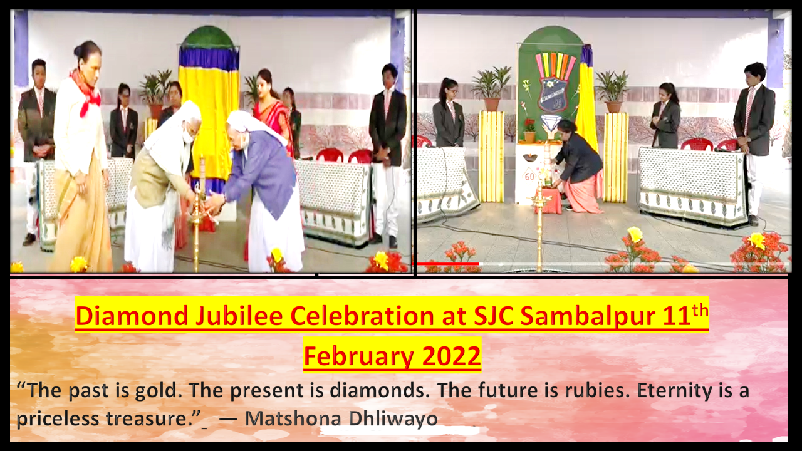
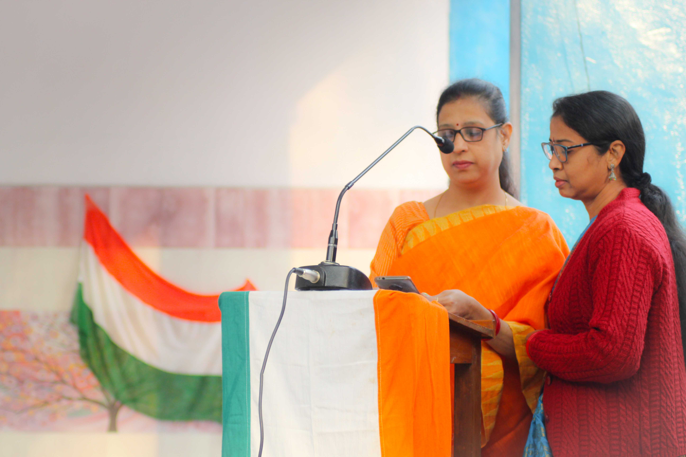
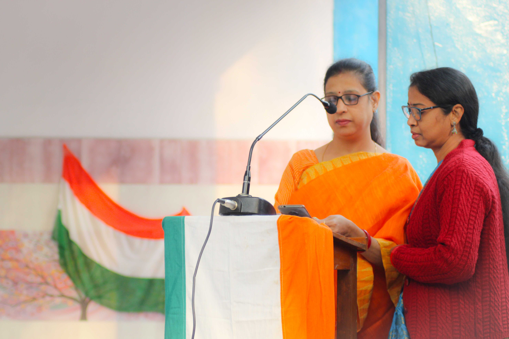

“The aim of education is the knowledge, not of facts, but of values”.
EDITORIAL REPORT
"A small body of determined spirits fired by an unquenchable faith in their mission
can alter the course of history."




 
